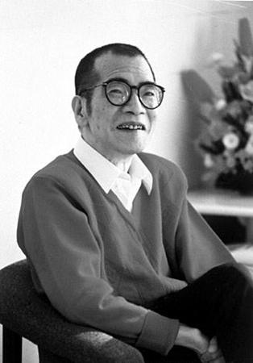
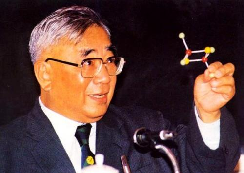
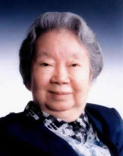

<-返回
厦门大学
基本信息
中文名:厦门大学
外文名:Xiamen University
简 称:厦大（XMU）
学校类别:综合类
学校特色:双一流（2017年）
211工程（1997年）
985工程（2001年）
111计划（2006年）
2011计划（2014年）
现任领导:党委书记：张彦
校长：张荣
校主：陈嘉庚
现有院系
厦门大学人文学院：
中国语言文学系、历史学系、哲学系、人类学与民族学系
厦门大学新闻传播学院
新闻学系、广告学系、传播学系
厦门大学外文学院
英语语言文学系、欧洲语言文学系、日本语言文学系、法语语言文学系
厦门大学艺术学院
美术系、音乐系、设计系
厦门大学海外教育学院
华文系
厦门大学国际学院
厦门大学经济学院
经济学系、统计系、财政系、金融系、国际经济与贸易系
厦门大学管理学院
会计学系、企业管理系、管理科学系、旅游与酒店管理系、工商管理教育中心（MBA中心）、
高级经理教育中心（EMBA项目）、财务学系、市场学系
厦门大学法学院
厦门大学法律硕士教育中心
厦门国家会计学院
会计硕士专业学位联合教育中心 、 物流与项目管理工程硕士教育中心
厦门大学公共事务学院
政治学系、公共管理系、社会学系、公共管理教育中心（MPA中心）
厦门大学马克思主义学院
厦门大学国际关系学院
厦门大学教育研究院
厦门大学体育教学部
厦门大学继续教育学院
厦门大学社会与人类学院
厦门大学数学科学学院
数学与应用数学系、信息与计算数学系、概率与数理统计系
厦门大学物理科学与技术学院（理学部分）
物理学系、天文学系
厦门大学化学化工学院（理学部分）
化学系、化学工程与生物工程系、化学生物学系
厦门大学物理科学与技术学院（工学部分）
物理学系、天文学系
厦门大学化学化工学院（工学部分）
化学系、化学工程与生物工程系、化学生物学系
厦门大学信息学院
计算机科学系、智能科学与技术系、信息与通信工程系、网络空间安全系、人工智能系
厦门大学材料学院
材料科学与工程系、生物材料系
厦门大学建筑与土木工程学院
建筑系、土木工程系、城市规划系
厦门大学能源学院
厦门大学航空航天学院
飞行器系、动力工程系、机电工程系、仪器与电气系、自动化系
厦门大学电子科学与技术学院
电子科学系、电子工程系
杰出校友（部分）
陈景润 卢嘉锡 谢希德



|
1933年5月22日出生于福建省福州市仓山区，1949年至1953年就读于厦门大学数学系。主要从事解析数论方面的研究，并在哥德巴赫猜想研究方面取得国际领先的成果。英国数学家哈伯斯坦和德国数学家黎希特把陈景润的论文写进数学书中，称为“陈氏定理”。
|
1934年，卢嘉锡毕业于厦门大学化学系；1939年，获英国伦敦大学学院哲学博士学位；1955年，当选为中国科学院学部委员（院士）；1981年5月，出任中国科学院院长；1988年，当选为第三世界科学院副院长。其工作涉及物理化学、结构化学、核化学和材料科学等多种学科领域。
|
1921年3月19日，谢希德出生于福建省泉州市，1946年，谢希德从厦门大学数理系毕业，1956年被国务院调到北京大学联合筹建半导体专业组。谢希德女士主要从事半导体物理和表面物理的理论研究，是中国这两方面科学研究的主要倡导者和组织者之一
|